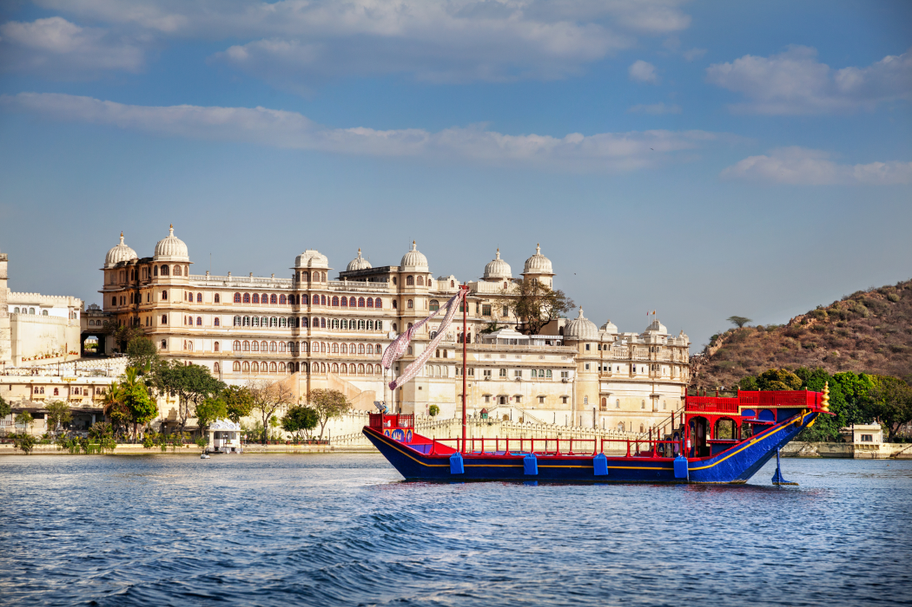

Romantic Experiences in Udaipur
You Shouldn't Miss
With its shimmering lakes, majestic palaces, candlelit rooftop restaurants, and timeless heritage charm, Udaipur has long been considered one of India's most romantic destinations. Often called the Venice of the East, the city offers the perfect blend of history, culture, luxury, and natural beauty.
Unlike destinations that rely solely on luxury hotels or modern attractions, Udaipur's romance comes from its atmosphere — beautiful lakes and waterfront views, historic palaces and havelis, scenic sunsets, heritage architecture, rooftop dining experiences, cultural charm, and peaceful surroundings. Every corner of the city feels designed for slow, meaningful travel.
Romantic Experiences Couples Shouldn't Miss
From sunset boat rides on Lake Pichola to quiet evenings overlooking illuminated palaces, here are some of the most romantic experiences couples shouldn't miss.

Take a Sunset Boat Ride on Lake Pichola
No romantic trip to Udaipur is complete without experiencing the beauty of Lake Pichola. As the sun begins to set, the lake reflects the golden hues of the sky while the surrounding palaces and historic buildings create a magical backdrop. The experience becomes even more memorable as the City Palace lights begin to illuminate the waterfront.

Enjoy a Rooftop Dinner Overlooking the City
One of the most romantic things to do in Udaipur is enjoying dinner at a rooftop restaurant. Imagine candlelit tables, views of illuminated palaces, gentle evening breezes, and reflections on the lake. Many rooftop venues around Lake Pichola and the Old City provide a setting that feels straight out of a travel magazine.

Explore the Historic Old City Together
Sometimes the most memorable travel experiences come from simply wandering without a plan. The Old City offers narrow heritage lanes, hidden courtyards, artisan shops, traditional architecture, and charming cafés. Walking through these historic neighborhoods allows couples to experience a quieter and more authentic side of Udaipur.

Watch Sunset from Sajjangarh Monsoon Palace
Perched high above the city, the Sajjangarh Monsoon Palace offers one of the most spectacular sunset views in Rajasthan. Panoramic city views, scenic Aravalli landscapes, dramatic sunsets, and a deeply romantic atmosphere make this a highlight for many couples visiting Udaipur.

Visit City Palace and Discover Royal History
The magnificent City Palace is not only a historical landmark but also one of the most beautiful places in the city. Couples can spend hours exploring ornate courtyards, royal chambers, decorative balconies, and lake-view terraces. The palace offers countless opportunities for memorable photographs.

Experience an Evening Cultural Performance
Travel experiences become more meaningful when they include local culture. The evening performances at Bagore Ki Haveli feature traditional Rajasthani dance, folk music, and cultural storytelling. Sharing these experiences often becomes a memorable part of a couple's journey.

Take a Leisurely Walk Along Fateh Sagar Lake
For couples who enjoy quieter moments, an evening stroll around Fateh Sagar Lake offers a refreshing alternative to busy tourist attractions. Scenic lake views, a relaxed atmosphere, local cafés, and beautiful sunsets make it a great way to slow down and enjoy the city's natural beauty.

Shop for Handcrafted Souvenirs Together
Exploring local markets can be surprisingly romantic. Popular shopping areas include Hathipole Bazaar, Bapu Bazaar, and Clock Tower Market. Couples can browse handmade textiles, miniature paintings, jewelry, and traditional crafts. These purchases often become meaningful reminders of the trip.

Capture Beautiful Moments at Gangaur Ghat
Located along Lake Pichola, Gangaur Ghat is one of the city's most photogenic locations. Lakeside views, historic architecture, peaceful surroundings, and excellent photography opportunities make it a favorite for couples. Early mornings and evenings are particularly beautiful.

Choose a Stay That Enhances the Experience
Where you stay can significantly influence the atmosphere of your trip. Many couples specifically seek heritage hotels, boutique hotels, romantic rooftop spaces, traditional architecture, and personalized hospitality. Unlike large commercial properties, boutique hotels in Udaipur often provide a more intimate and memorable experience.
Best Areas for Couples to Stay in Udaipur
When choosing a hotel in Udaipur, couples often prioritize ambiance and location over extensive facilities. The right area can make a significant difference to the overall atmosphere of your stay.
Lake Pichola
Perfect for romantic views, rooftop dining, and sunset boat rides. The most sought-after area for couples visiting Udaipur.
Old City
Ideal for heritage charm, walking access to attractions, and boutique stays. A deeply atmospheric neighborhood for couples who love history.
Fateh Sagar Area
Suitable for a relaxed atmosphere, scenic surroundings, and longer stays. A quieter alternative with its own scenic beauty.

Making the Most of Your
Romantic Udaipur Trip
Plan around sunset — many of Udaipur's most memorable experiences happen during the golden hour. Allow time for slow exploration and don't overfill your itinerary. Mix palace visits with lakeside relaxation, and explore beyond the major attractions. Some of the city's most romantic moments happen in hidden streets and quiet corners.
Stay in a heritage or boutique property — the atmosphere often enhances the overall travel experience. For couples interested in authentic heritage hospitality, Kaladwas Lal Haveli offers a boutique stay experience inspired by traditional Mewari architecture, combining historic character with personalized service.
Book Your Stay View Rooms
Your Questions Answered
Everything couples need to know before planning a romantic trip to Udaipur.